기타 설정
실습을 진행하기 위한 거의 모든 준비가 완료되었습니다. 이 장에서는 전화번호, Queue(대기열), Routing Profile 설정을 합니다.
전화 번호 발급
-
아래 화면을 따라 Phone numbers 메뉴로 이동합니다.

-
Claim a number 버튼을 클릭합니다. 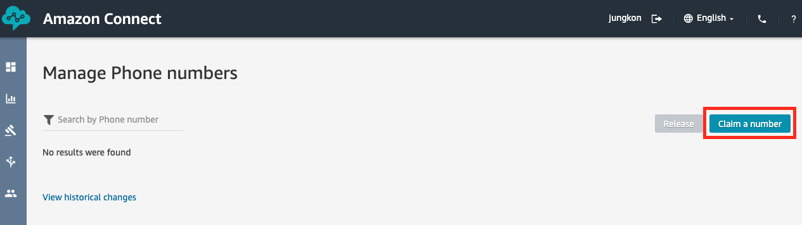
-
DID 탭을 선택하고 Country 항목에서 United States 항목을 선택하여 미국 전화번호를 발급 받습니다. 아래 나타나는 전화번호 예시 중 하나를 고릅니다. 이후, Contact flow / IVR 항목에서 Sample inbound flow (first contact experience) 를 선택하고 Save 버튼을 클릭합니다. 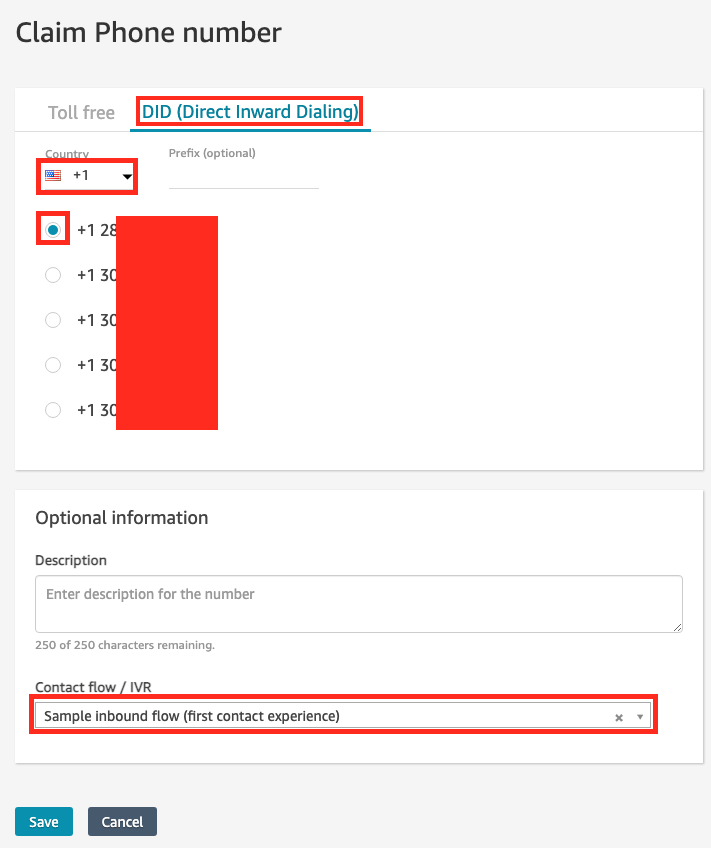
-
아래와 같이 전화번호가 생성되었습니다. 이 전화번호를 기록해둡니다. 위 3번에서 Sample inbound flow (first contact experience) 라는 IVR 시나리오를 연결해두었기 때문에, 지금도 전화를 해당 전화번호로 걸어 확인할 수 있습니다. 이 전화번호는 테스트 시 필요하므로 기록해둡니다. 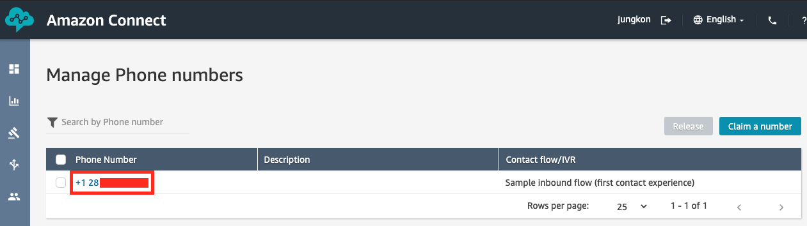
테스트를 위한 통화 시 국제 전화 요금이 발생할 수 있습니다. 사용하고 있는 캐리어의 정책을 확인하시기 바랍니다.
Queue 설정
Queue 는 상담원에게 연결되기 전 대기열을 의미합니다. 상담원의 스킬(직능)별로 Queue 를 생성 / 구분할 수 있습니다.
-
Queue 메뉴로 이동합니다. 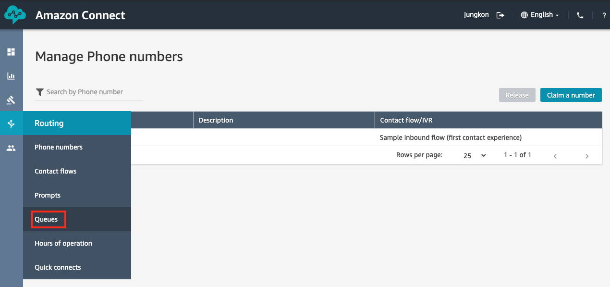
-
Add new queue 버튼을 클릭합니다. 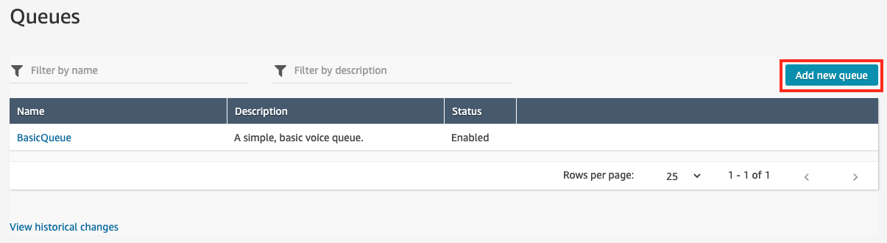
-
아래와 같이 입력하고 Add new queue 버튼을 클릭하여 Sales Queue 를 생성합니다. 다시 2번으로 돌아가 같은 방식으로 Inquiry, Support Queue 또한 생성합니다. 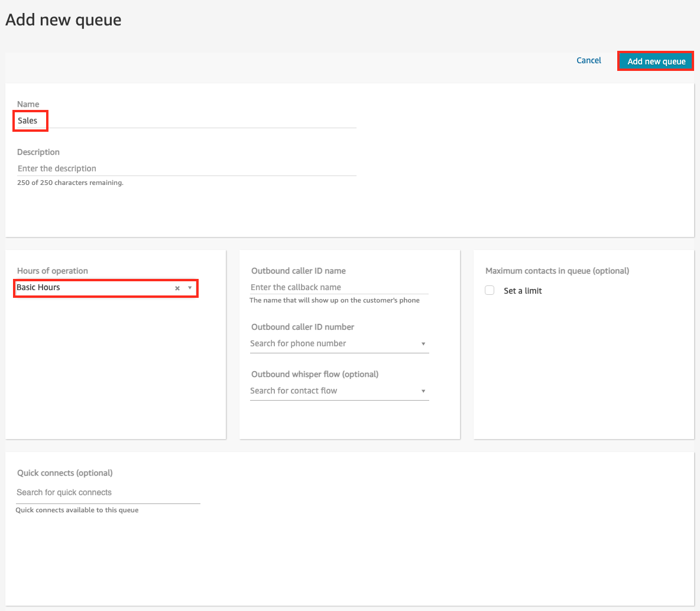
-
아래와 같이 3개의 Queue 가 생성된 것을 확인할 수 있습니다. 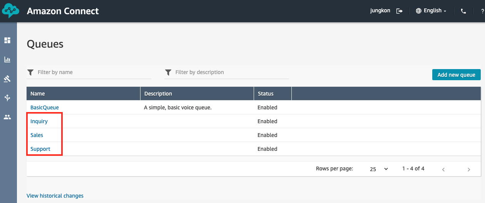
Routing Profile 설정
-
Routing Profile 메뉴로 이동합니다.

-
아래 화면에서 Basic Routing Profile 을 클릭하여 설정 화면으로 이동합니다. 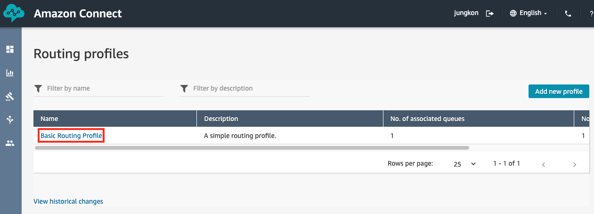
-
아래 설정 화면에서 기존 BasicQueue 를 삭제합니다. BasicQueue 항목에 체크하시고 Remove 버튼을 이용합니다. 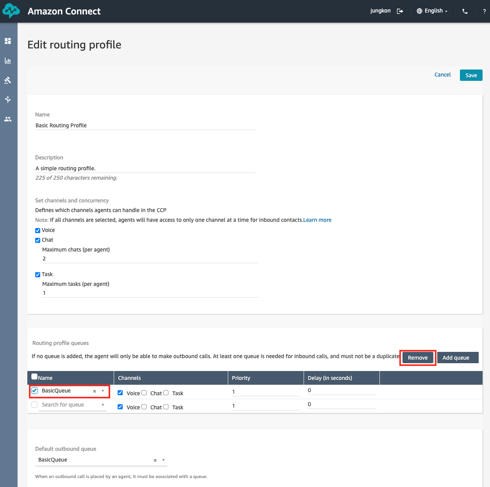
-
이후 위에서 추가했던 Sales, Inquiry, Support Queue 를 추가합니다. Channels, Priority, Delay 등의 설정도 화면과 동일한지 확인합니다. 이후 화면 상단의 Save 버튼을 눌러 설정을 저장합니다. 나머지 설정들을 그대로 둡니다. 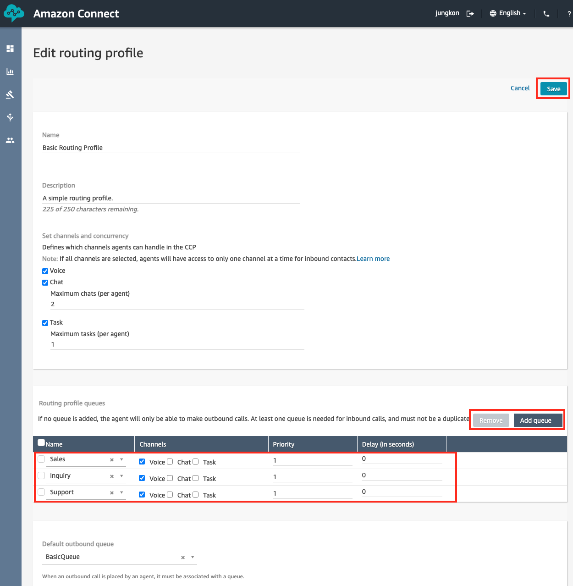
-
저장을 하면 아래와 화면과 같이 No. of associated queues 항목이 3개인지 확인을 합니다. 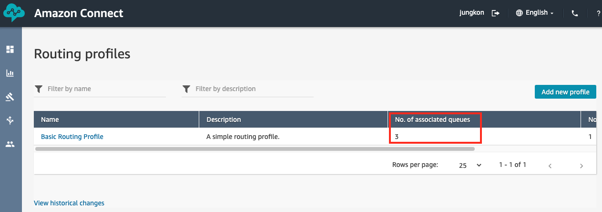
이제 모든 설정을 완료했습니다. 다음 장 부터는 본격적으로 콜센터 구축을 해봅니다.